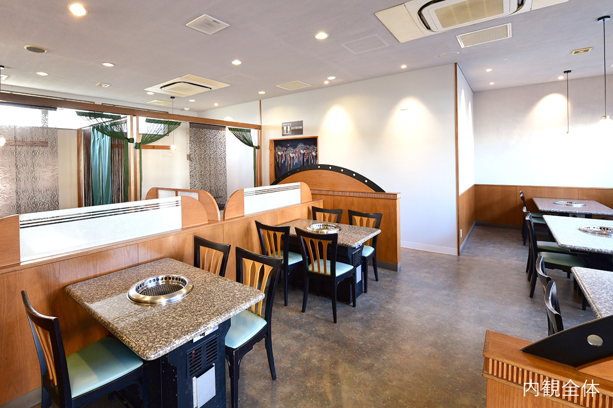

-
優質和牛，主要選用沖繩和牛
店內主要選用A4等級以上的「黑毛和牛」。黑毛和牛是在完善的生產環境下成長，徹底管控生產履歷與衛生的環境。嚴選提供油花與瘦肉完美比例的肉品。
-
新鮮的日本國產蔬菜
本店堅持使用美味、安心又安全的食材，適合包肉的生菜、用來自製泡菜的大白菜… 這些全部都是採用日本國產的新鮮蔬菜。
-
店家自製沾醬，帶出肉品的鮮味
６種自製沾醬，根據肉的部位及吃法不同，搭配不同種類的醬汁品嘗，讓和牛本身的風味更加突出。
-
自製沖繩和牛特調湯頭
使用了牛筋高湯、雞骨、鯖魚片高湯調製的湯頭和慢火細熬、濃縮各種精華的冷麵湯汁…這些湯頭，都加入了大量的牛筋、雞骨與香味蔬菜。
-
味道層次豐富的自製泡菜
使用了用多種蝦子為基底製成的自製藥念醬(泡菜醃醬)調味，並嚴格控管溫度、仔細計算發酵時間以提升鮮味，才能打造出如此溫和醇厚的味道。
不同部位的風味


和牛跟日本國產牛的不同
-
和牛
和牛是日本國產牛隻的品種名稱，是透過日本在來種多次交配、改良而來。能被稱為「和牛」的只有4個品種。
-
日本國產牛
跟原產國、原產地、品種無關，只要是在日本飼養的時間最長，在日本國內處理成食用肉品的牛肉，都能稱為「國產牛」。
菜單


店舖資訊
-

-

-

-

-

- 
店內有適合單人或少人數用餐的桌位，亦提供最多能容納30人的挖洞暖爐座位，可以依照您的需求做安排。
最新消息
-
- 2019.12
- 数種のエビがベースの自家製ヤンニョム（キムチの素）でしっかりと味付
-
- 2019.12
- 数種のエビがベースの自家製ヤンニョム（キムチの素）でしっかりと味付
-
- 2019.12
- 数種のエビがベースの自家製ヤンニョム（キムチの素）でしっかりと味付
-
- 2019.12
- 数種のエビがベースの自家製ヤンニョム（キムチの素）でしっかりと味付
我們的理想
本店的創始者親川幸男， 希望為客人提供「家裡吃不到」、「能夠安心品嘗」的美食。 更重要的是，想讓客人感受到料理的「美味」， 因此店內食材不只堅持選用「沖繩和牛」，對於燒肉的沾醬與蔬菜也非常講究。 我們承接上一代的理念， 希望在任何時代，大家都能圍繞在桌邊， 一邊享用美味燒肉，一邊歡樂談笑。 就如同擁有【沉穩、團聚】之意涵的店名「團」一樣。 我們今後也會持續精進，努力打造出這樣一家燒肉店。
交通方式
店鋪資訊
- 地址
-
〒901-0152
沖縄縣那霸市小祿 2-3-16
- 交通方式
-
那霸機場 乘車8分
沖繩都市單軌電車 奧武山公園站 徒步13分鐘
- 停車場
- 11輛
- TEL
- 050-3476-4726
- 營業時間
-
午餐 11:00 〜 15:00（L.O.14:30）
晚餐 17:00 〜 23:00（L.O.22:00）
- 座位數
- 60席
- 公休日
- 週二